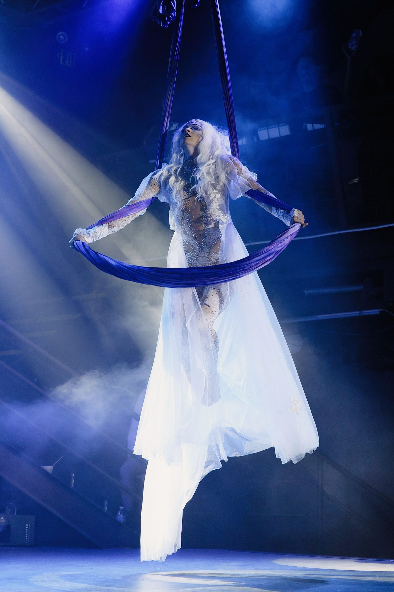
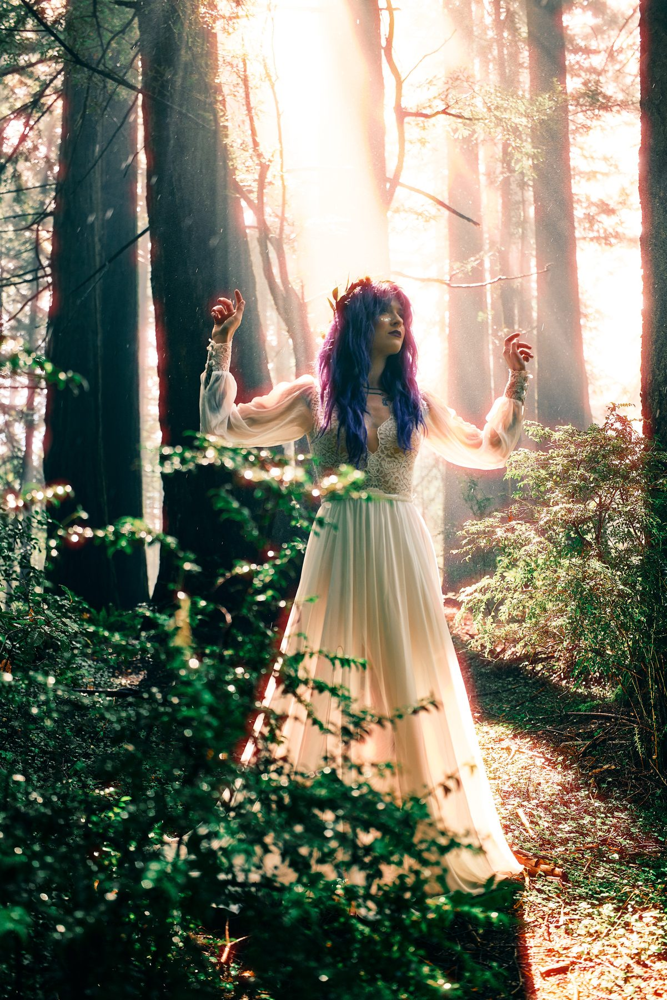

Aerial Artist · Producer · Circus
Bay Area aerial hammock & sling. Act creation, character, and movement quality — for festivals, stages, and original productions.
Luna Finn discovered her love for circus at Burning Man in 2010 and hasn't looked back since — building acts that fuse aerial technique, character, and a deep attention to movement quality.
Signature aerial hammock and sling acts for hire — festivals, cabarets, galas, and brand events.
Founder & director of DAM Circus and creator of Salooniverse and Cosmic Expedition! — original shows and a monthly SF revue.
The Movement Quest — a choreography & movement-discovery course guiding performers to find their own flow.

Three signature acts, plus a repertoire of aerial hammock and chair pieces. Full videos available on request for serious inquiries.
View the RepertoireAn aerial movement and choreography discovery course — find your own movement identity and learn to break down an act, step by step.
Begin the Quest